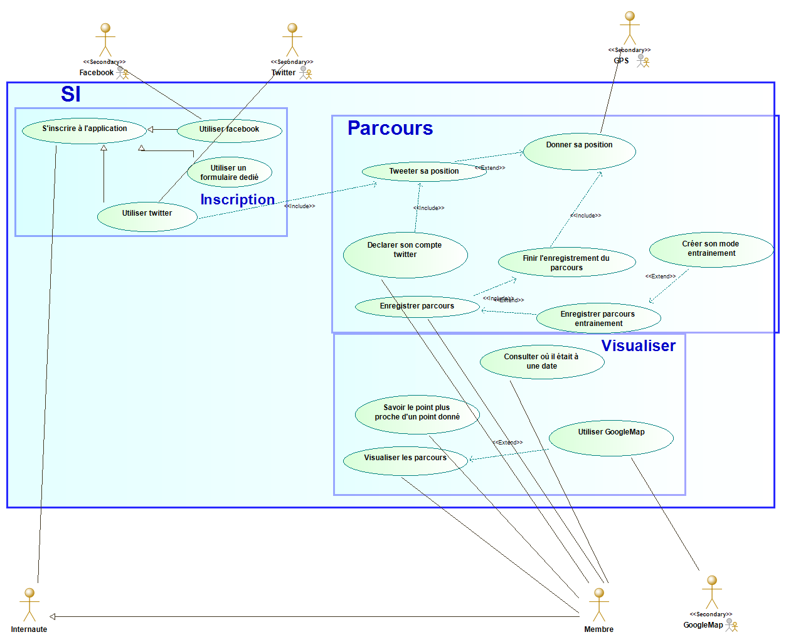
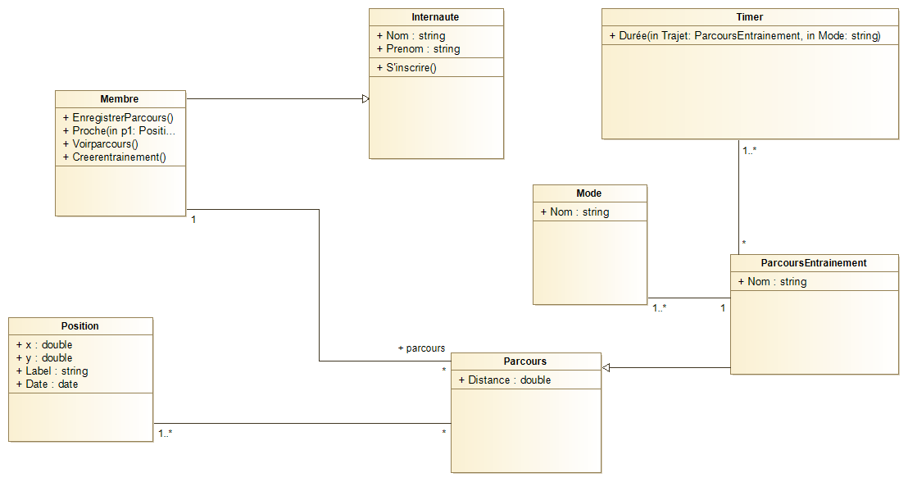
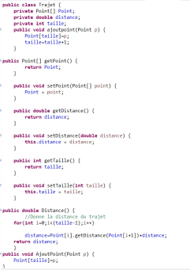
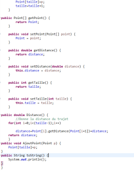
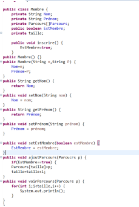

Finale
Nous avons vu précédemment comment passer de la conception au code et du code à la conception, ce TD va également avoir le même but que le précédent cependant qu'il sera complet, on aura un exemple il faudra fait le cas d'utilisation, le diagramme de classe et également le code.
La class "journey"
- Un internaute peut s'inscrire à l'application en utilisant son compte facebook ou twitter ou un formulaire dédié.
- Un membre peut enregistrer son parcours :
- il déclare sur son téléphone qu'il commence à enregistrer un parcours;
- toutes les 10 secondes, le système crée un nouveau point automatiquement en demandant au GPS du téléphone sa position et l'heure actuelle; le point est ajouté au parcours en cours; Les coordonnées GPS sont des coordonnées sur une sphère et pas des coordonnées cartésiennes, cependant dans le cadre de ce TD, travaillez “simplement” avec des coordonnées cartésiennes;
- le membre signale la fin du parcours qui est automatiquement enregistré dans sa base de parcours.
- Un membre peut visualiser les parcours passés : par la distance parcourue, la durée, la vitesse moyenne, la date (jour et heure), le type d'entrainement, …
- Un membre peut demander à visualiser un parcours en utilisant googleMAP.
- Un membre peut savoir quand il était le plus proche d'un point donné lors d'un parcours.
- Un membre peut savoir où il était à une date particulière : le système renvoie la position enregistrée à la date la plus proche.
- Un membre peut préciser qu'il veut enregistrer un parcours d'entrainement; dans ce cas, avant le départ, il précise le mode d'entrainement. Pour chaque mode, un temps de relevé des points différent est prévu : marche rapide (2mn), course à pied (10s), vélos (5s), foot (10s), …
- Un membre peut créer son propre mode d'entrainement en précisant les temps de consultation etc.
- Un membre qui a précisé son compte twitter, peut demander en début de parcours, que chaque relevé de point soit automatiquement “tweetté” avec le message “Je suis en position …”.
Il faut donc commencer à faire la conception pour ensuite coder.
Avec tout ce qu'on a vu précédemment en mettant les packages on aura pour diagramme de cas d'utilisation :

Si vous avez besoin d'un rappel pour les diagrammes de cas d'utilisation veuillez voir le TD1.
Et on aura pour diagramme de classe :

Si vous avez besoin d'un rappel pour le diagramme de classes veuillez voir le TD4
Après avoir vu le TD précédent nous aurons pour code :
  
Il ne faut pas oublier de tester donc il faut également un main.
Erreur à ne pas faire
Nominez les attributs et les classes dans votre code comme dans la conception pour qu'il n'y ait pas confusion.
Si vous êtes bloqués au code n'essayez pas d'improviser, souvent c'est dû à la conception.